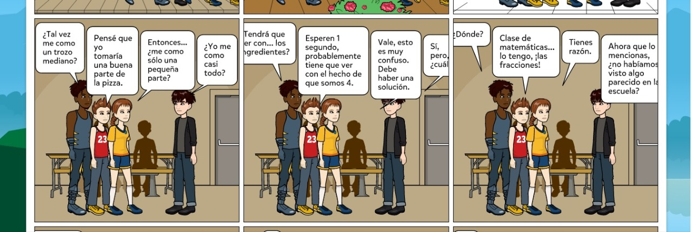
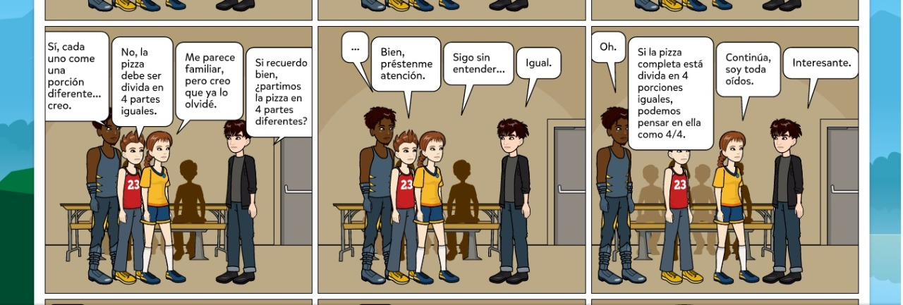
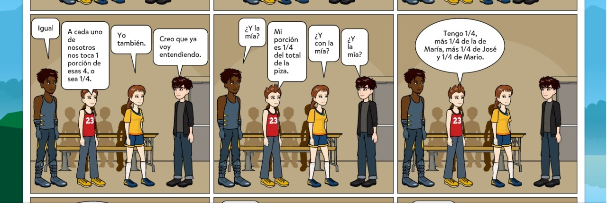
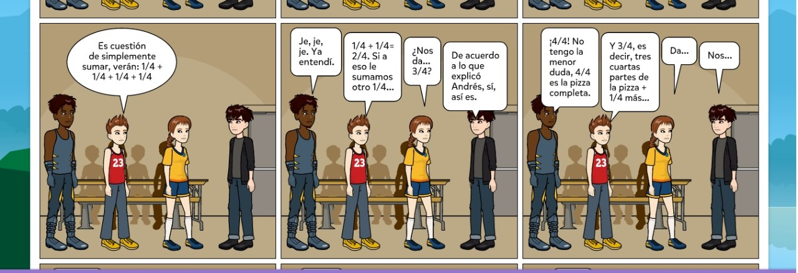
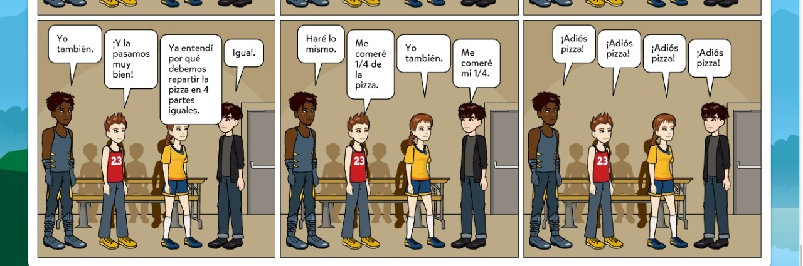
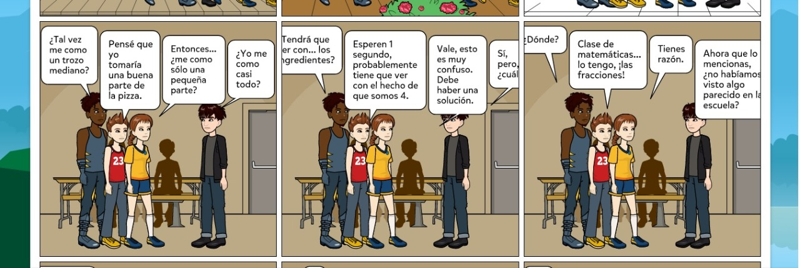
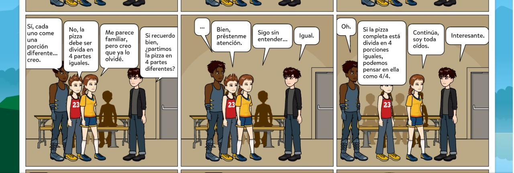
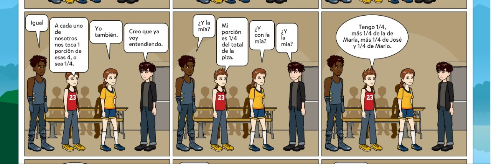
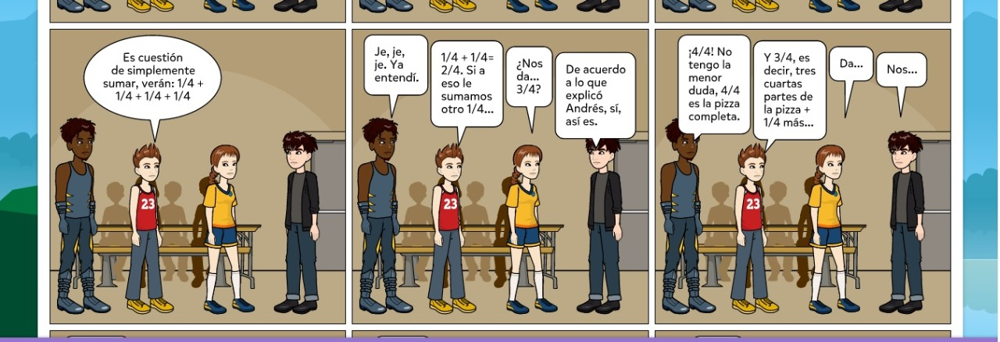
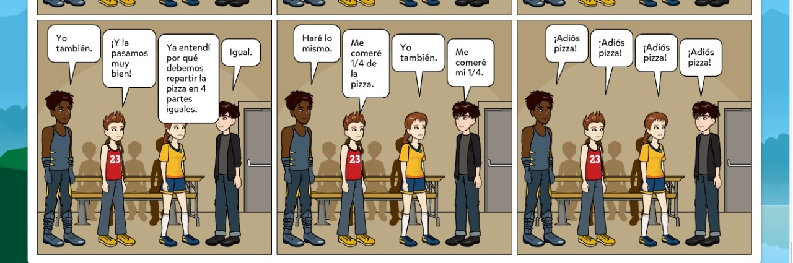

A continuación puedes apreciar un comics relacionado al uso de fracción en una situación cotidiana
 









PIXTON. (s.f.). Pixton comics. Obtenido de Aplicación: Recuperado de https://app-es.pixton.com/